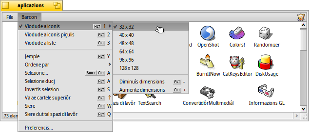

| Tabele |
|
Montâ i volums Navigazion Aspiet Preferencis di Tracker preferences Lavorâ cui files Stâts des transazions |
Tracker
Il Tracker al è la interface grafiche par ducj i tiei files. Ti permet di creâ gnûfs files e cartelis o cjatâ, inviâ o cambiâ non e parimentri ancje copiâ o eliminâ chei esistents.
Jessint une aplicazion come dutis lis altris (il scritori cun lis sôs iconis e je pardabon dome un barcon a plen visôr is sotfont), Tracker si mostre cui siei barcons tal Deskbar e al è pussibil sierâlu e tornâ a inviâlu. La maniere plui semplice par sierâ e tornâ a inviâ un Tracker colassât o blocât (o un Deskbar cjaviestri) e je chê di clamâ il Monitor dai Teams.
 Montâ i volums
Montâ i volums
Par podê jentrâ e doprâ un disc fis, CD, clavute USB e v.i., vâl a dî fâ savê al sisteme che al è lì. Chest al ven fat cuntun clic-diestri sul Scritori o suntun volum za montât (come di disc di inviament) e selezionant il volum dal sot-menù . Tu cjatis il stes menù tal Deskbar.

A son ancje che ti permetin di no stâ a montâ dut a man a ogni inviament di sisteme.
La impostazion chi parsore e montarà in automatic ducj i dispositîfs di archiviazion che tu âs colegât/inserît e ancje al montarà ducj i discs al inviament che a jerin stâts montâts in precedence.
Navigazion
Come impostazion predefinide, cuant che tu fasis dopli clic suntune cartele, Tracker al vierç un gnûf barcon lassant il barcon de cartele gjenitôr/superiôr viert. Chest al pues puartâ in pôc timp a vê un scritori straplen.
Tu puedi evitâ chest tignint fracât il tast OPZ, che in automatic ti fasarà sierâ il barcon gjenitôr/superiôr.
Chest al è ancje vêr cu la navigazion vie tastiere. Par savê di plui in merit, viôt l'argoment Scurtis e cumbinazion di tascj.
Spostâsi tra lis cartelis al è un dai lavôrs principâi di Tracker, come ducj i gjestôrs di files su chês altris plateformis. Il Tracker di Haiku al à cualchi funzionalitât uniche che ti permetarà di fâ in maniere eficiente cheste operazion.
Sgarfâ te jerarchie dai sot-menù
Invezit di fâ doplis clics injù, cartele dopo cartele, e je une maniere miôr par sgarfâ jù tes cartelis:
Fâs clic diestris suntune cartele e parsore tal solit menù contestuâl tu cjatarâs un sot-menù de cartele corinte che ti permetarà di navigâ jù di un nivel. Ti baste spostâ ju la jerarchie fintremai che tu cjatis il file, o la cartele, che tu stâs cirint e fâi clic par vierzilu. Parsore al mostre i contignûts de cartele /boot/home/config/.
Se tu fasis l'operazion chi parsore intant che tu strissinis un file, al vignarà spostât dulà che tu lu molarâs.
Al è pussibil doprâ un metodi simil di cualsisei barcon Tracker:
Fâs clic su la aree in bas a çampe, dulà che al ven mostrât il numar di elements listâts, e tu varâs i sot-menûs par ogni nivel parsore de posizion corinte. Di lì tu puedis sgarfâ jù tra lis cartelis come simpri.
Note che il Scritori al è simpri il nivel plui alt viodût che al è chel dulà che il Tracker al mostre i volums montâts. Duncje, se tu desideris lâ suntun altri disc, prime tu âs di navigâ insù (Scritori) e di lì passâ sul altri disc.
Tu otignarâs il stes sot-menù di navigazion cuant che tu strissinis un file parsore di une cartele. Dopo un pôc di timp che tu i stâs parsore, al vignarà fûr un sot-menù che ti permetarà di sgarfâ jù te tô destinazion. Se tu âs scomençât il strissinament cul boton di diestre dal mouse, cuant che tu lu molarâs, tu podarâs sielzi tra copiâ, spostâ o colegâ il file.
Saltâ ai files datilografant
Tu podaressis vê confidence cul concet dai gjestôrs di files di altris sistemis operatîfs: scrivint lis primis letaris di un non di file tu vegnis puartât al prin file che al corispuint a chei caratars iniziâi. Haiku al puarte chê idee plui indenant. Se nol esist un file che al scomence cun chês letaris al saltarà al prin file che al inclût la stringhe in cualsisei part dal so non. Se se nol cjate ancjemò nuie cun chê stringhe tai nons dai files alore dopo al larà a cirî tai atribûts.
Tal esempli parsore a son tancj files che a scomencin par "Haiku logo", chest al rint avonde inutilis lis metodichis plui semplicis di ricercje datilografant. Ma in Haiku, scrivint "web" tu saltarâs al prin câs in "Haiku logo - website". I caratars che tu digjitis a vignaran fûr intal angul in bas a çampe dulà che di solit tu cjatis la conte dai elements di ducj i file te cartele. Un secont dopo vê scrit un caratar, la videade e torne a chê normâl e tu sês pront par une gnove ricercje datilografant.
Filtrâ la ricercje datilografant
Invezit di saltâ a un file scrivint, tu âs ancje la opzion par filtrâ vie ducj i file che no corispuindin ae stringhe di ricercje che tu scrivis. Chest al pues miorâ une vore la clarece, in particolâr cuant che si à a ce fâ cun cartelis straplenis. Doprant MAIUSC SPAZI tant che delimitadôr, tu puedi adiriture filtrâ su plui stringhis.
A diference dal salt datilografant, il filtri al restarà fintremai che tu frachis ESC o tu sieris il barcon (o jessint de cartele se tu dopris la navigazion a barcon singul).
Chest "filtrâ la ricercje datilografant" al ven configurât tes Preferencis di Tracker.
Aspiet

I barcons di Tracker a ufrissin trê diviersis modalitâts di viodude dal menù :
(ALT 1) - Iconis grandis, tu puedis cambiâ la dimension des iconis dal sot-menù o in/decressi la lôr dimension cun ALT +/-.
(ALT 2) - Iconis piçulis.
(ALT 3) - Une liste detaiade dai tiei files, che ti permet di mostrâ/platâ i atribûts dai files (viôt l'argoment Atribûts.)
Il menù al ufrìs une schirie di altris funzions:
(ALT Y) - Al ridimensione il barcon ae sô dimension ideâl.
- Disponibil dome in viodude a iconis o a iconis piçulis, un sot-menù ti permet di decidi l'ordin di visualizazion des variis proprietâts:
, , , , , , ,
- Al invertìs l'ordenament
(ALT K) - Al met in linie dutis lis iconis suntune gridele invisibile. Ten fracât MAIUSC e il menù al devent che in di plui al ordene dutis lis iconis in base al criteri selezionât parsore.
(MAIUSC ALT A) - Al selezione i files in base a une espression regolâr.
(ALT W) - Al siere il barcon. Ten fracât MAIUSC e il menù al devente , che al siere ducj i barcons di Tracker.
(ALT Q) - Al siere ducj i barcons di Tracker che si cjatin tal spazi di lavôr corint. Un scurte utile se tu dismenteis di tignî fracât il tast OPZ intant che tu fasis clic su lis cartelis e chês a restin viertis, implenant cussì il to spazi di lavôr.
Cualchi volte tu desideris nome rangjâ cualchi icone cence eseguî un " (ALT K)" complet. In chel câs, tu selezionis lis iconis interessadis e tu scomencis a strissinâlis te lôr gnove posizion. Prime di molâlis, ten fracât ALT. Cheste operazion lis metarà in rie cu la gridele invisibile.
La prime colone te modalitât e determine lis etichetis des iconis in modalitât e . Cheste operazion si apliche ancje ae largjece des etichetis: se une etichete e ven cjonçade de largjece de colone te , parimentri e vignarà cjonçade passant a e .
Di solit, la prime colone e je il non dai files, ma tu puedis semplicementri passâ ae , strissinâ la colone a çampe e vê lis iconis etichetadis cu la lôr dimension cuant che tu tornis ae modalitât . Fantastic!
Il rest des funzions si spieghin avonde di bessolis, trascurant lis preferencis di Tracker.
Preferencis di Tracker
al vierç un panel che al ufrìs une schirie di impostazions che, dulà che nol è ovi, a varessin di deventâ claris une volte provadis. Viodût che dutis lis impostazions a vegnin aplicadis sul moment, tu podarâs viodi daurman lis modifichis.
Duncje, a fâle curte, lis impostazions che no son ovis a son:
- Decît se fâ vignî fûr ducj i discs montâts sul Scritori o fâju vignî fûr dentri di un barcon, dopo che tu vierzis la icone "Discs" sul Scritori.
- Tu puedis stabilî la , vâl a dî che une cartele che e ricêf un dopli clic no vignarà vierte sul so propri barcon, ma invezit tal barcon za viert, sostituint la viodude de cartele superiôr. Cheste no je la stesse robe di tignî fracât il tast OPZ intant che si fâs dopli clic, come che al è descrit parsore, parcè che tu pierdarâs la posizion e la dimension salvade par ogni barcon.

Prime di passâ Tracker ae , parcè che tu lu cjatis plui familiâr, ti conseìn di provâ prime la navigazion basade sul menù, viodût che di fat e funzione in maniere plui svelte une volte che tu ti sês abituât. Di chê altre bande, la navigazion a barcon ugnul e ufrìs un Navigadôr dulà che tu puedis inserî o copiâ e tacâ un non di percors e ti permet ancje di doprâ i botons indaûr, indenant e sù.
Ativant il tu filtrarâs i contignûts di un barcon di Tracker tal moment che tu digjitis, cussì di visualizâ dome i files che a corispuindin ae tô stringhe cul lôr non o cualsisei atribût atualmentri visualizât. Viôt parsore.
e no tu viodarâs i files che a scomencin cuntun ".", une convenzion popolâr par nomenâ i files di configurazion sot Linux.
Tu puedis selezionâ par sostituî cun chês lis iconis standard dai files des imagjins.
- Stabilìs il colôr di un indicadôr opzionâl dal spazi libar che al ven mostrât dongje de icone dal disc.
- Definìs cuant e cuâi discs a vegnin montâts in automatic, come descrit parsore sot "Montâ i volums".
A proposit, chest panel al è ancje disponibil come Tracker da lis di Deskbar.
Lavorâ cui files
Cuant che al ven invocât suntun file selezionât, la plui part dai comants di menù di a vegnin ancje presentâts tal menù contestuâl fasint un clic diestri su chel file.
Come simpri i comants a son avonde clârs.
- Cjate un file o une cartele. Viôt l'argoment Interogazions par vê plui informazions.
- Cree une gnove cartele o cualsisei altri file basât suntun model.

Sielzint in bas si vierç une cartele /boot/home/config/settings/Tracker/Tracker New Templates. Cree un file in chê cartele e al vignarà fûr tant che model tal menù . Il gnûf file (o cartele) creât al varà il stes gjenar, non, contignûts e ducj i altris atribûts dal model. Tal câs di une cartele, al varà ancje la stesse posizion e disposizion des colonis dai atribûts.
Te videade parsore, tu puedis viodi lis cartelis di model personalizadis "Email folder" e "Music folder". Dutis dôs a crearan cartelis cu lis lôr stessis iconis personalizadis e a varan za configurâts i atribûts pertinents.
Tu puedis ancje ordenâ i modei in sot-menûs personalizâts. Ti baste sielzi e une gnove cartele speciâl e ven creade in Tracker New Templates, lì tu puedis cambiâi non par adatâle aes tôs necessitâts. Copie i files dai tiei modei lì dentri, par fâju vignî fûr tal gnûf sot-menù. La videade parsore e mostre i sot-menûs "C dev files" e "Office files".
- Un sot-menù al ufrìs dutis lis aplicazions che a puedin gjestî chel gjenar di file.

La aplicazion preferide che e vierzarès il file midiant il dopli-clic, e je segnade cuntun segn. Chest sot-menù al liste prime chês aplicazions che a puedin gjestî chel specific gjenar di file, in chest câs al è un file di test, il gjenar text/plain. Dopo a rivin dutis lis aplicazions che a puedin gjestî chel super-gjenar in gjenerâl, achì text/*. Par ultin te liste a son chêi che a puedin vê a ce fâ cun cualsisei file. Se no tu fasis clic suntune aplicazion tal sot-menù, ma invezit su la vôs , si vierç un panel:
Chi tu cjatarâs di gnûf i programs che a son stâts listâts tal sot-menù. Selezionant un e fasint clic sul boton , tu cambiarâs la aplicazion preferide par ducj i file di chel gjenar di file, in chest câs text/plain.
-
Chest al vierç un panel che al mostre i metadâts di un file e ti permet di modificâ i siei permès. Tu puedis cambiâi non fasint clic sul non dal file in alt.
Il panel al è fat cun trê schedis:
- : Al mostre dâts standard come dimension, date di creazion/modifiche, il gjenar di file e la posizion. Fâs clic sul percors de posizion par vierzi la cartele superiôr dal file. Il menù al stabilìs la aplicazion preferide par vierzi che particolâr file.
- : Ti permet di cambiâ i permès 'proprietari', 'grup' e 'altri' dal file.
- : Al liste ducj i atribûts adizionâi dal file cul lôr valôr e gjenar.
, e - ti permet di cambiâ non o duplicâ o butâ i files selezionâts te scovacere.
, e - ti permet di spostâ, copiâ o colegâ i files selezionâts doprant il metodi di navigazion cul sot-menù. Se tu tegnis fracât MAIUSC intant che tu invochis il menù ti ven dade la opzion par creâ un colegament relatîf. Tu ricognossarâs i colegaments midiant la lôr etichete di icone sotlineade cun ponts.
, e - ti permet di taiâ, copiâ e tacâ i files doprant lis notis. Se tu tegnis fracât MAIUSC intant che tu invochis il menù tu puedis files, magari di une altre cartele che tu puedis tacâ di cualchi altre bande plui indenant. Tignint fracât MAIUSC tu puedis ancje tacâ i files copiâts intes notis, ma dome come colegaments.
- al nasarà e al stabilirà il gjenar dai files se no'nd àn za vût un prime, p.e. se tu âs trasferît un file cun wget che nol stabilìs di bessôl un gjenar di file. Se tu tegnis fracât MAIUSC intant che tu invochis il menù cheste vôs e cambie in che al identifiche il gjenar di file e lu comede se prime al jere sbaliât.
- ti ufrìs ducj i components adizionâi gjenerics dal Tracker e chei che a puedin gjestî il file(s) selezionât(s). Viôt l'argoment Components adizionâi di Tracker par vê plui informazions.
Stâts des transazions
Cuant che tu copiis, spostis o eliminis i files, Tracker al mostre il lôr avanzament cuntun barcon di stât. Se tu inizializis plui di une transazion, ogni lavôr al varà la sô visualizazion dal stât.

A diestre a son doi botons par meti in pause o fermâ dal dut une transazion. Cualchi volte al pues jessi util meti in pause une grande transazion par un moment. Par esempli, ti podarès coventâ inviâ di corse une aplicazion pesante. Copiâ une grande cuantitât di dâts al scjafoie la largjece di bande di I/O dal disc fis e duncje al pues intardâ il to flus di lavôr.